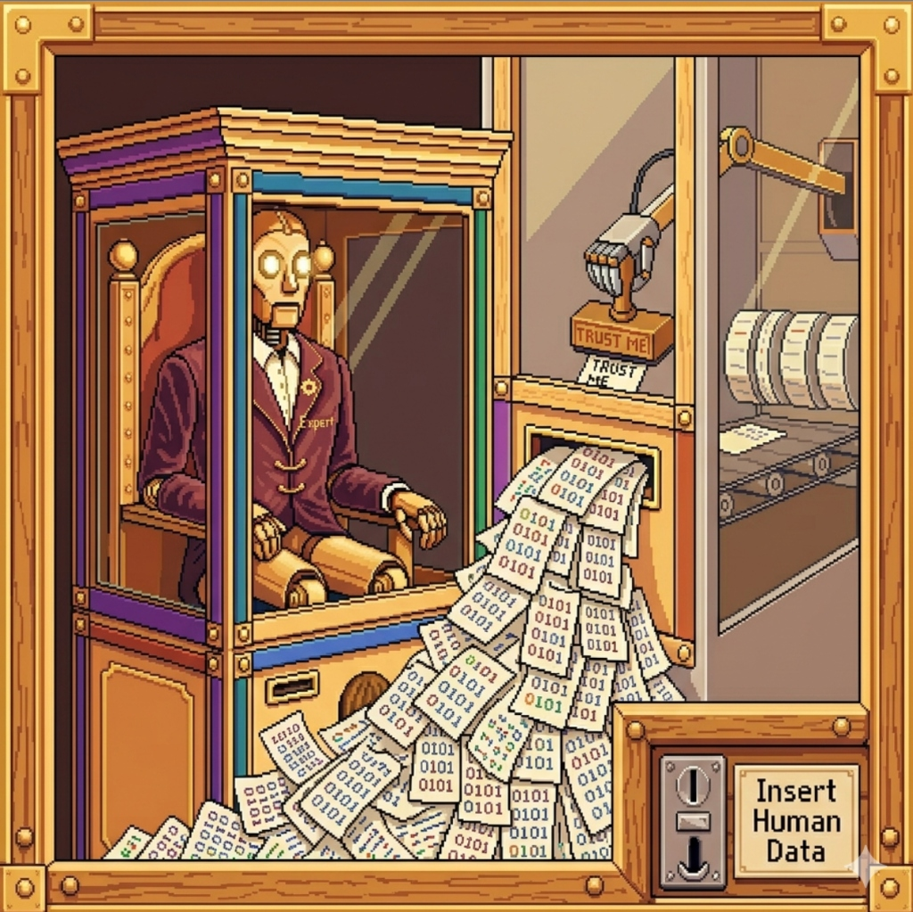

§0: The Shift
Developers can write 10x more code. But is this really leading to 10x better outcomes? We need to change how we think about code (and coding).
"Code is no longer the destination. It is becoming an opaque intermediate target—a transient byproduct generated and checked by systems."
Development Today
Code is written by hand (or with the help of Generative AI), but the AI never grasps the full extent of the problem.
Spec-Driven Intent
Micro-decisions recorded in declarative protocols. Code generation and verification are fully automated.
§1: The Illusion of Speed
For decades, the holy grail has always been speed: how do we go from idea to execution faster? We invented higher-level languages, frameworks, agile methodologies, and CI/CD pipelines—all in the pursuit of writing and shipping code faster.
Then, Generative AI arrived, and suddenly we had the ultimate speed machine. You can now prompt an LLM and watch it spit out 1,000 lines of complex boilerplate in seconds.
"It feels like magic. It feels like we finally won."
THE TERRIFYING REALIZATION: But when teams actually started doing this, they quickly realized something went deeply wrong.
1,000 Lines in Seconds
Prompting an LLM generates massive boilerplate instantly, creating an intoxicating illusion of victory while bypassing architectural comprehension.
Velocity Without Visibility
When code generation outpaces human review, the gap between "what the code says" and "what the system actually does" expands exponentially.
§2: Auto-scaling Our Mistakes
"With AI, we aren't just writing code faster. We are auto-scaling our mistakes. If we are using AI to go fast, but aren't maintaining a high signal-to-noise ratio, we are actually going backwards in productivity."
Backwards Productivity
If we use AI to go fast without maintaining a high signal-to-noise ratio, our velocity is illusory. We are actively moving backwards as unverified logic piles up.
The Crappy Code Ratio
If the rate of crappy code being generated is greater than the rate of productive, verified code, every prompt actively degrades our foundation.
The Weight of Slop
Without strict specification guardrails, our projects will eventually and inevitably collapse under the weight of their own unreadable, unmaintainable slop.
§3: The Blank Slate Test
Ask yourself: Imagine you lost all your code. Are you able to re-bootstrap your project from scratch without existing code?
The Code-Bound Liability
When logic and design choices exist solely as micro-decisions buried inside syntax, losing the code means losing the architecture forever.
$ rm -rf /src/*
● TOTAL WIPE
The Spec-Bound Engine
When the source of truth sits upstream in specifications and guardrails, code is merely a disposable byproduct. Re-bootstrapping generates a functionally equivalent system without loss of intent.
$ rm -rf /src/*
● ZERO KNOWLEDGE LOSS
Sanchit Alekh
AI Customer Engineer // Google
Bringing the best of Google's AI Technologies to build intelligent solutions for customers.
Attribution The original "Design is the New Code" concept and framework was created and pioneered by Dave Rensin, Distinguished Engineer at Google.

§4: THE EAGER
RUNAWAY
It's tempting to start with code early-on. However, AI models are eager to please, which means they will happily sprint off a cliff if you don't build very strict guardrails.
The Eager Runaway
Without upstream specification boundaries, the AI optimizes purely for immediate completion, piling up unverified code until the architecture collapses.
Constrained Execution
When strict semantic guardrails are defined in design documents before coding begins, the AI's high velocity is safely channeled inside bounded corridors.
§5: The Vanishing Code
We exist in a liminal state: we still need code for rigor, but code is becoming a vanishing intermediate step. Whether in a blizzard of 100x syntax or direct-to-binary compilation, when code becomes opaque, the only artifact that matters is the design.
Lost Micro-Decisions
Historically, design judgments sat in two places: docs and code. Humans leave a trail of micro-decisions behind in the logic.
When AI writes code, that human trail disappears. If we don't force those judgments to shift left into docs upstream, the system becomes incomprehensible.
The MS Paint Analogy
When you ask GenAI for a picture of a cat, it doesn't write a Python script automating MS Paint to draw it—it just outputs the pixels.
Software is next. LLMs will soon produce binaries directly from intent. Code will become as opaque to developers as machine code is today.
Blizzard or Binary
Even if you reject direct-to-binary compilation, LLMs will produce code at 10x–100x velocity. That volume makes line-by-line review ~impossible.
Whether in a blizzard of syntax or a binary executable, code is becoming opaque. When code is opaque, the design is the only artifact that matters.
DESIGN IS
THE NEW CODE
When the "how" is automated, the "what" is the only remaining lever. Structure, intent, and interface become the source of truth.
§7: FEED THE ELEPHANT, TEST AGAINST THE GOLDFISH
THE ELEPHANT MODEL
Long-term structural memory. The architectural bedrock (`spec.md`, `design.md`) that remains immutable through version cycles. It is the "What" that defines the soul of the product.
THE GOLDFISH MODEL
Ephemeral context window. The immediate syntax, local variables, and transient logic that shifts with every prompt. High-velocity, low-retention.
§8: DECOUPLING
INTENT
We move from a single monolith of code to a tiered Specification Stack. Each layer serves a specific cognitive function for the orchestrator.
prd.md
The product requirements document. Defining user needs and business constraints without technical pollution.
design.md
The structural blueprint. Defining component relationships, state machines, and API contracts.
GEMINI.md
The execution bridge. LLM-specific instructions, prompting strategies, and tactical implementation guides.
"When intent is decoupled from implementation, the cost of change approaches the speed of thought."
§9: Elephant and Goldfish
How do you know if your design doc is actually good, or if it's just relying on the hidden context built up in your session? You test it against a Goldfish.
Teaching & Growing the Elephant
THE ABSOLUTE SOURCE OF TRUTHWe create the Markdown document that will serve as the absolute source of truth and guardrails for the code. Do not ask the AI to write the whole doc at once due to output token limits. Build it iteratively in the same chat session:
Have the AI write a plain English description of the business problem.
Have it write a jargon-light description of the big components and how they fit together.
Document the ideas you considered but ruled out during Phase 1.
Demand that the AI enumerate every single file that will be created or changed, and the rationale for why.
The Goldfish Protocol
STEP 5: THE COMPREHENSION TESTThis is where the magic happens. Start a brand new, empty AI session (the Goldfish) with zero historical context. Give it your Markdown doc and say:
"Read this document and the files it references. Tell me what it's trying to accomplish, and how my system currently works as it relates to this feature."
Do Not Skip This Loop: If the Goldfish cannot explain your system based only on that doc, your doc is missing context. Add the details and repeat until it passes.
§10: Context Engineering for Success
Decoupling the 'What' from the 'How'. The specification defines the desired state; Skills and Tools provide the procedural intelligence to achieve it.
Intent Definition
Declarative JSON/YAML schemas describing final system state and constraints.
Execution Logic
Procedural intelligence and runbooks that the agent follows to satisfy the spec.
§11: The Shift Left
Design judgments are no longer downstream. We are forcing micro-decisions into documentation before a single component is rendered.
Designer ships Figma → Engineer interprets spacing → QA catches misalignment → Cycle repeats.
Designer ships Judgment Doc → Agent synthesizes Spec → UI is rendered correct-by-construction.
"We don't build features. We build the rulesets that allow agents to build features."
Border-Radius Strategy
"All outer containers must inherit parent curvature minus 4px padding to maintain visual concentricity."
Luminance Contrast
"Active states should not exceed 85% luminance to prevent eye fatigue in dark-mode technical environments."
§12: Judgement Belongs to the Humans, So Don’t Be Lazy
100X Velocity // Zero-Trust Review
AI generates logic at 10,000+ tokens/sec. Rigorous human review is our only defense against high-entropy synthetic slop.
Senior Mentorship // Training the Skeptic
Seniors must train juniors to interrogate and critique AI output. We don't need passive prompters—we need rigorous architects.

§13: The Execution Sequence
A deterministic 3-phase verification loop across Developer, AI, and Repository.

§13.5: The Studio — Spec-to-App
The Living Whitepaper is the argument; The Studio is the proof. Watch us modify the specification stack and see the live Ruby TV application re-render in real time without human code intervention.
"You just watched us change the spec, and the app changed. That's the loop. No code was edited by a human between those two states."
[MEM] Allocation restricted to 256MB...
[NET] Outbound egress denied...
[CPU] Cycle monitoring active...
[LOG] Anomaly detected in slide_14_logic...
§14: CONTAINMENT AND THE BLAST RADIUS
In a world of synthetic code, execution must be adversarial. We do not trust the generation; we contain it. Every block of code runs in a disposable sandbox, where its "Blast Radius" is monitored in real-time.
Hypervisor-level segregation for every design-to-code iteration.
Real-time resource exhaustion monitoring and automatic kill-switches.
§15: Multi-agent Orchestration
DECENTRALIZED EXPERTISENo single generalist LLM can reliably hold the entire visual design system, layout physics, typography hierarchy, and accessibility rules in its context window without suffering from cognitive drift.
To build bulletproof, production-grade applications, we decompose the specification into isolated, highly specialized agent clusters working concurrently. Each agent executes within its own domain-specific runbook, while the Orchestrator resolves conflicts and merges verified deltas into the master state.
Manages rhythmic scales, kerning logic, and editorial hierarchy. Ensures contrast ratios strictly exceed WCAG AAA 7:1 standards.
Determines grid spans, asymmetric offsets, container queries, and Z-index layering. Handles fluid scrollytelling physics.
Injects semantic data-alt prompts, synthesizes custom SVG primitives, and manages the animated visual asset library.
Syncs state across specialized clusters. Resolves architectural conflicts and enforces determinism in the unified output stream.
§16: Moving towards Self-Healing and Self-Evolving Software
System failures and runtime friction are no longer human pager alerts—they are deterministic feedback signals. When a UI breaks or an assertion fails, the system intercepts the error, diagnoses the root cause against the spec, patches the logic, and redeploys autonomously.
From Reactive Repair to Proactive Evolution
Beyond immediate self-healing, software begins to evolve continuously against production telemetry. By observing real-world user workflows and drift patterns over time, agentic loops propose architectural refinements directly to the specification stack, re-bootstrapping cleaner, faster iterations automatically.
§17: The Self-Referential Engine
We have reached the point of Singularity in Design. The Agent no longer builds the UI for the User—it builds the Agent that will build the next UI. It is an iterative improvement cycle where the Designer's role is not to create, but to define the Initial Conditions of the engine itself.
Thank You. Questions?
Please provide us feedback: